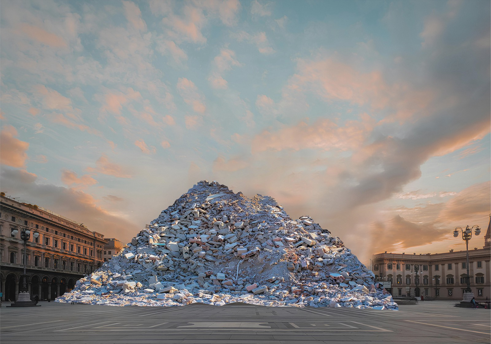
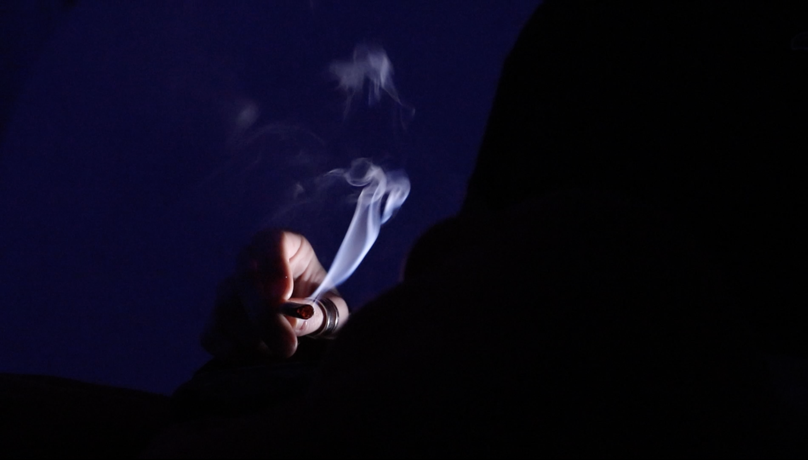
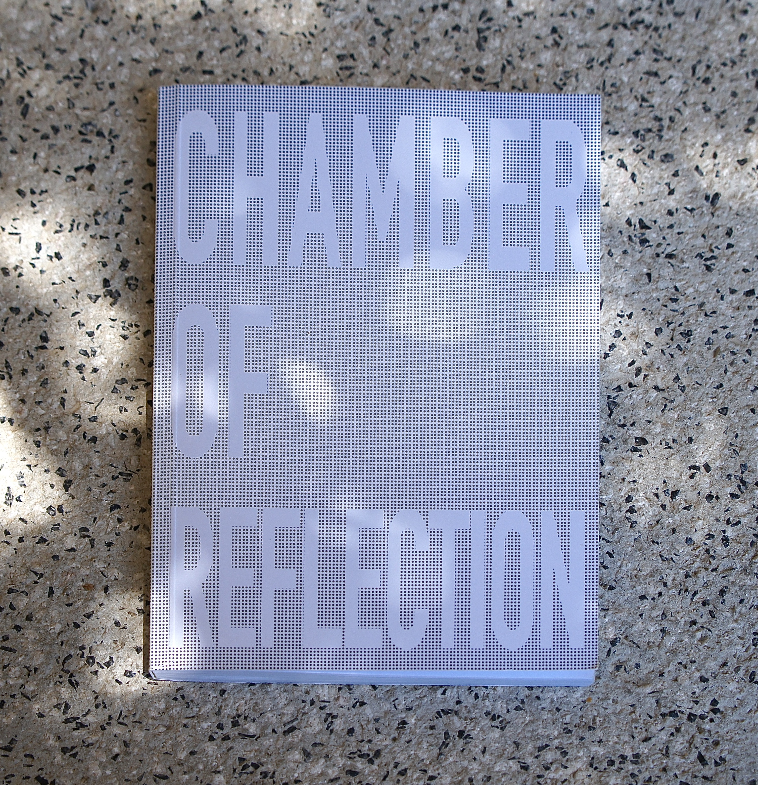
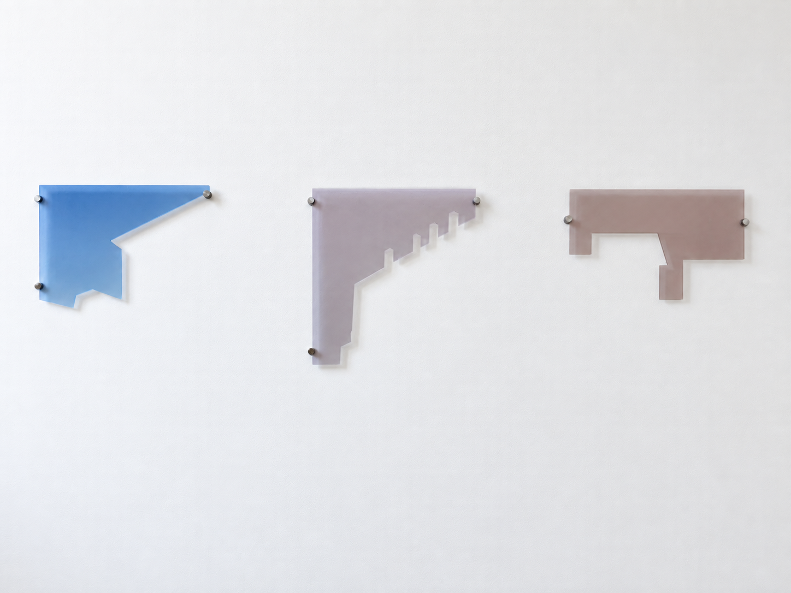
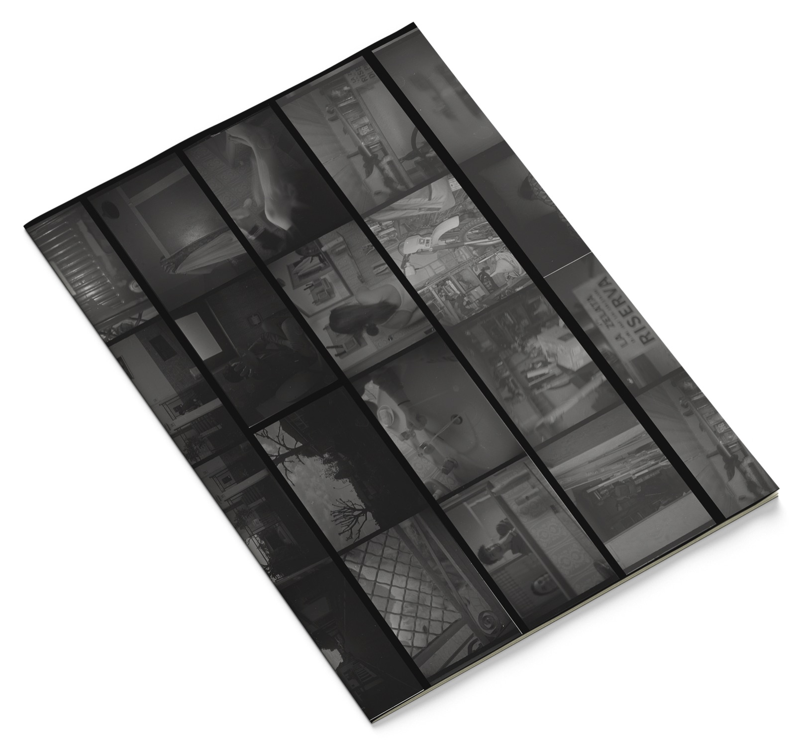

Works

Postcards They Won’t Receive
Series of 3 postcards
Digital print on postcard, 105 × 148 mm

Hostium Rabies Diruit - La rabbia dei nemici distrusse
4 stamps, 3,5 × 3 cm
Print on sticker

Ruins
UV print on Forex board, 100 × 70 cm

One Thing At Time
Video 4' 18''
Short film made in collaboration with Giorgia Checcucci

Chamber of Reflection, Vol. I
Artist's book, 15 × 18 cm
Digital print on paper and tracing paper

Concrete Forest
Installation series
Digital photograph on laser-cut plexiglass

Il Secondo Stipendio
Found objects
52 × 25 cm

La Vita Intima
Fanzine
Black and white analog photography
Essays
About
Bio
My name is Martina Redaelli and I am a visual artist. After earning a Bachelor of Arts in Painting and Visual Arts from NABA (), I am currently pursuing a two-year program in Visual Arts and Curatorial Studies.
My artistic practice develops primarily through digital language and focuses on political and social issues. My work stems from a research process that intertwines theory and practice, investigating the dynamics of the present, power relations, and the transformations of contemporary society.
Writing is an integral part of my research. Often the reflections that accompany my projects take shape in essays and critical texts, which I consider an extension of artistic practice and an autonomous space of investigation.
Alongside my career as an artist, I have gained experience in organizing and coordinating exhibitions and have collaborated as an assistant to artist and NABA professor Stefano Serretta, assisting him in research and artistic production activities. These experiences have helped broaden my perspective on artistic work, allowing me to also engage with the curatorial and organizational aspects of contemporary practice.
Education
- NABA >Painting & Visual Arts -
- Visual Arts & Curatorial Studies - in corso
Experience
-
Research and Artistic Production Assistant
- ongoing
Collaboration with Stefano Serretta, artist and NABA lecturer
-
Cultural Mediator, Triennale Milano
Cultural mediation and public engagement activities within exhibitions and the exhibition programme
Contact
- martinaredaelliart@gmail.com
- @martinaredaelli.studio
- substack
- @ellyreda